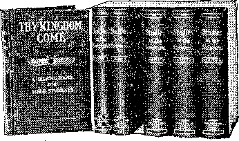

Vol. VIL BROOKLYN, N. Y. ' IZ222 No- 12~°
OUR LORD’S GREAT PROPHECY DEPICTING END OF “WORLD”
GREAT WORLD CHANGES LONG PROPHESIED NOW DUE—BUT “EARTH ABIDETH FOREVER.”—Eccl. 1:4. MATTHEW, TWENTY-FOURTH CHAPTER, MADE PLAIN.
Since the beginning of the war in Europe in the autumn of 1914, and counter-disturbances elsewhere, the attention of Bible Students and secular editors has been directed simultaneously to the great prophecy of Matthew 24, which unmistakably is being fulfilled before our eyes on a most gigantic scale. As this remarkable prophecy is thoroughly elucidated by Pastor Russell in his timely work, “The Battle of Armageddon,” written in 1897, we have secured permission to publish here the chapter from that work which treats it in full. The entire volume is equally interesting and important, containing 720 pp. of live matter portraying the steps leading to the great European conflict and the final outcome of the world’s troubles. See announcement elsewhere in this issue.—Editor.
OCR Lord’s words in Matthew 24 form . the most remarkable prophecy of Holy Writ respecting the “Time of the End,” the closing epoch of this Gospel Age, at which juncture of time we now stand. It was uttered near the close of His earthly ministry, when He was endeavoring to prepare His disciples gradually for the New Dispensation, which would be fully introduced after the tragedy of Calvary. He wished them to understand that they must not expect immediately the. honors and glories of the Kingdom, by His faithful. Before these glories and blessings, would come trials and sufferings. He, their Master, the Kin£, must be rejected of Israel and be crucified, in harmony with the prophetic declarations, then Israel would be given over to their enemies, and their holy city and costly temple be utterly destroyed; moreover, His disciples must not expect to be above their Master, exempt from the reproaches and sufferings that fell on Him; but that faithfulness to Him and His teachings would cause them to be hated of all,men for His sake; but finally, though after much tribulation, those faithful unto death would be rewarded, when He would come again to receive them unto Himself and to a share of His glory.
Teaching along this line our Lord reserved until near the close of His ministry. At first the disciples were disposed to resent this, and to insist (as some do today) that the Lord’s cause must conquer the wprld, as a result of their preaching; and St. Peter went so far as to express the dissent to our Lord, saying, “Be it far from Thee, Lord, this [death and the scattering of Thy people and the triumph of evil generally] shall not be unto Thee.” (Matthew 16:22; Mark 8:31, 32.) But our Lord severely rebuked St. Peter; and all of the disciples seem to have gradually settled down to a realization that the glories of the Kingdom were still remote, and that the Master must go away, and, leaving them, send the Comforter, the Holy Spirit, to guide and keep them until He would come again in the glory of the Father’s Kingdom.
It was in this attitude of mind and with our Lord’s latest expression with reference to the Temple, still ringing in their ears, that the disciples sought from Him definite information on these points which were not yet clear in their minds.
The Three Questions.
Verse 3.—“And as Jesus sat upon the mount of Olives, the disciples came unto Him privately, saying, Tell us (1) When shall these things [the destruction of the Temple, etc.] he? and (2) What shall he the sign of Thy presence1 and (3) of the end of the world [age]?”
Undoubtedly the opportunity and the questions were of Divine providence; for the prophecy was surely meant more for the instruction of God’s people living in this Harvest time, than for those who asked the questions. In studying this the world or so much of “cold love” toward the Lord; and His Truth that they were not worthy of persecution. But judged, by this same standard, and by our Lord’s prophecy, there have been sonqe faithful unto death throughout this Gospel Age;—a “little flock.”
The Gospel Wltnesr, World-Wide.
Verse 14.-r-“And this Gospel of the Kingdom shall be preached in all the world for a witness unto all nations. Then shall the end come.”—Mark 13:10.
.. Here,. £gain,, opr^.pj^lqqrjy sh,Q.wed,, the disciples that the end of the Age was much farther off than they had supposed; that the Message of His Kingdom was to be good tidings, not to Israel only, but to all nations. But this did not imply that other nations would receive the Gospel which Israel had rejected. Rather, we should expect just what we find, that as the god of this world (Satan) blinded Israel, so he would blind the vast majority of other nations, and hinder them from seeing in Christ the power of God and the wisdom of God —and he has. (1 Corinthians 1:24.) If only a remnant of Israel (specially instructed for centuries under the Law) was found worthy to be of the Royal Priesthood, what more could be reasonably expected of the heathen nations, long “without God and having no hope”?
It is well that we carefully note our Lord’s words—that the Gospel was not to be preached to the nations to convert the nations, but as a witness to the. nations, and to call, and perfect, and gather out of all nations “the Elect.” Later on “the Elect,” as the Kingdom, will bless the nations, opening their deqf ears to the Gospel, and their blinded eyes to the True Light.
This witness has already been given. The Word of the Lord, the Gospel of the Kingdom, has been published to every nation of earth. Each individual has not heard it: but that is not the statement of the prophecy. It was to be, and has been, a national proclamation. And the end has come! “The Harvest is the end of the Age,” our Lord explained. -—Matthew 13 :39.
The Trouble in End of This Age.
Verses 15, 16.—“When ye therefore shall see the Abomination of Desolation, spoken of by Daniel the Prophet, stand in the holy place (whoso readeth let him understand), then let them that be in Judea flee into the mountains!”—See Mark 13:14-20.
Four points in this narrative show that while it may have had a typical application. to the trouble in the end of the Jewish Age, its real or most important application belongs to the trouble with which the Gospel Age terminates. (1) The. reference to the “desolating abomination” mentioned in Daniel’s prophecy. (2) The statement that the trouble will be the most severe the world has ever known or will ever experience. (3) That unless the carnage were cut short there would be no flesh saved. (4) The context succeeding unquestionably describes events at the end of this Age—events which could not be applied to the end or Harvest of the Jewish Age, and were not fulfilled there. Two of these points de1 serve special examination.—See Daniel 11:31; 12:11.
Prophecy it is very necessary to keep in memory the questions to which it is the inspired answer. The prophecy is given with much similarity by three of the Evangelists, Matthew, Mark and Luke; but since Matthew’s is the most complete and orderly, we follow its narrative in general, bringing forward any modifica-tions noted in the other accounts.
Beware of False Christs.
Verses 4, 5.—“Take heed that no man deceive you. For many shall come in ■ My iname, I 'an- Gb ri . .a-nA-sball.
deceive many.”
Gamaliel mentions two of these false Christs in his speech referred to in Acts 5 :36, 37; and history tells us of several others who deceived many Jews. Most notable among these was Sabbathai Levi, of Smyrna, who announced himself A. D. 1648.
Altogether, there have probably been fifty or more false Christs, male and female, and many of them undoubtedly demented^—possessed of evil spirits. But none of these, nor all of them together, can be said to have “deceived many.” Yet it is against the kind which “deceive many” that our Lord cautions us here, and again, later on in this prophecy, in wnich connection we will examine particularly the anti-christs which have deceived many.
The History of Eighteen Centuries Briefly Foretold.
Verses 6-8.-—“And ye shall. hear of wars and rumors [threats, intrigues] of wars; see that ye he not troubled; for all these things must come to pass, hut the end is not yet. For nation shall rise against nation, and kingdom against kingdom; and there shall he famines and pestilences, and earthquakes, in divers places. All these are primary sorrows.”
Thus briefly did bur Lord summarize secular history, and teach the disciples not to expect very soon His Second Coming and glorious Kingdom. And how aptly I Surely the world’s history is just this—an account of wars, intrigues, famines and pestilences—little else ! Jesus separates the history of the true Church and states it with similar brevity, thus:
Verses 9-12.—“Then [during that same period, the Gospel Age] they shall deliver you up to he afflicted, and shall kill you; and ye shall he hated of all nations [peoples] for My name’s sake. And then [during that same period] many shall he offended, and shall hetray one another, and shall hate one another. And many false prophets [teachers] shall rise and shall deceive many. And because iniquity shall abound, the love of many shall wax cold.”
In the light of history would it be possible to portray the course of God’s true Church in fewer words? Surely not! The likeness is perfect. “Whosoever will live godly shall suffer persecution,” is the Apostle’s declaration; and whoever has not shared it has every reason to doubt his relationship to God as a son. (Hebrews 12:8.) And so with the Church as a whole, when not persecuted by the Ishmael and Esau class, it has been because there was so much of the spirit of
Daniel’s prophecy has much to say about an Abomination that maketh Deso?-late in nominal Spiritual Israel; which was set up in power representatively in Papacy, and which has exercised a great and baneful influence of spiritual desolation in the spiritual house or Temple of God, the Church of Christ. This abominable system of error was to continue until the cleansing of the sanctuary class; and beyond that it was to prosper greatly and lead many in nominal spiritual Israel to repudiate the Ransom-sacriflce, given once for all; and the result of its overspreading influence would be the desolation of rejected Christendom. “Abomination of Desolation”—The
Mass.
The great Abomination of Desolation whose foundation rests in the doctrine of the Mass (which substitutes human performances instead of the great Sacrifice of Calvary, for the cleansing away of sin) is now being supplemented by theories of self-atonement, and these overspreading abominations are backed by such influence and sophistry. as will deceive many—“if it were possible, the very elect”—and be precursors of the destruction of Christendom.
As already pointed out the Abomination of Desolation which defiled God’® holy place or True Temple, the Church, was the Papal one, the cornerstone o£ which is the blasphemous doctrine of the desolation are old; but so gross was the darkness of error during centuries past that few, if any, could see it. That the Mass was not seen to be the Abomination, even by the Reformers, is evident; for although the Church of England in her Articles denies the power of the priests to create Christ out of bread and wine," to sacrifice Him afresh, yet we have no intimation that the enormity of this sinful practice was seen. And Luther, while full of denunciation for many of Papacy’s sins, and falsities, did not see the great Abomination of Desolation to be the Mass. On the contrary, on his return to his church after his stay at Wartburg Castle, finding that the Mass, as well as images and candles, had been discontinued, as being without Scriptural authority, Luther re-established the Mass!
In this view of the matter there is great significance in our Lord’-s words— “When therefore ye see the Abomination of Desolation having stood in the holy place, as foretold by Daniel the Prophet (reader consider) ; then let them which be in Judea flee to the mountains.” Here we must remember the parallelism between the two Harvests, the two times of trouble and the two flights; and must consider that Judea would represent Christendom of today.
The Greek word rendered “mountains” may with equal or greater propriety be rendered in the' singular—mountain ; and it is so rendered in a majority of instances in the Common Version. Indeed, to flee out of Judea (literal) to either a mountain or many mountains seems peculiar sincexJudea was in fact “a hill country,” and Jerusalem is described as set in the top of the mountains. But to apply our Lord’s words to the present time, and to His people in Christendom, who now, in the light of Present Truth, see the Abomination stand where it ought not—in the holy place—in the stead of the true Sacrifice, is a very simple matter. They should at once flee from the influence of the abomination and from the system falsely styling itself Christ’s (mountain) Kingdom, to the true Mountain or Kingdom, which at this time Christ has returned to set up in glory and power.
In a word, this command to flee, and the description of its trials, can be prop’ erly understood only in connection with the command of Revelation (18:4), “Come out of her, My people, so t.hat you may have no fellowship with her sins, and that you may not receive of her plagues.”—Diaglott.
(Continued on Hd page, Isf column.]
13, 15, 17 HICKS ST., Monthly—12 eta. a year.
BROOKLYN, N. Y.
Independent,
Single copies, lo.
Unsectarian
Religrious Newspaper, Specially Devoted to the Forwarding of tl»e Laymen’s Home Missionary Movement for the Glory of God and Good of Humanity,
Ministers of the I. B. S. A. render their services at funerals f ree of charge. They also invite correspond-©ncefrom those desiring Christian counsel.
(Continued from 1st page, column,)
“Come Out of Her, My People!”
children of God who are thus figuratively, in our Savior’s words, “with child,” to flee from the nominal church system with its multitudinous machinery for false and rapid begetting, which they have learned to glory in and to boast of. Yes, it will be difficult for these to leave all and flee to the Lord and His Mountain (Kingdom). It will be difficult for them to believe that the Lord is really good and just and merciful, and that He has a gracious Plan which makes full provision for every member of Adam’s race—all redeemed by the great “Ransom for all.”
Flee Before the Winter Time.
Verses 20-22.—“But pray ye that your flight be not in the winter (neither on the Sabbath day), because then shall be
great tribulation, such as was not the beginning of hhe world to this
since time,
Verses 17, 18.—“Let him which is on the housetop not come down to take
those
thing out of his house; neither let that is in the field return back to his clothes.
These exnortations indicate the
any-him take
no, nor ever shall be. And except th.^ days be cut short there should no flesh be saved; but through the 'Elect thzzz days shall be cut short.”
those
pro-
priety of haste in flight out of “Babylon” (confused religious institutions) as soon as each sees the Abomination of Desolation. The Lord’s word is, that all temporizing or parleying or human ' reasoning will be dangerous; no time must be lost in obeying as soon as He causes us to see the Abomination of Babylon, and its relationship to all who have named His name. Alas! how many, , failing to heed the Master’s Word, have suffered themselves to be bound hand and foot, so that now flight is almost impossible. But the Master says, “My sheep hear My voice and they follow Me.”
There is another lesson in these verses: They show that some of the Lord’s people are in one place or condition, and some in another. Some are in the “field” ; that is, in the world outside all human organizations. These should not think it proper first to join the nominal churches; but using their liberty should flee from their position in the world, to become one with the Lord as members of His Kingdom—Mountain.
Some of the Lord’s people are in the “houses” or church systems of Babylon ; but, as here intimated, they are generally house-top saints, who have , a higher life and experience and faith than merely nominal church members. These in their flight are not to go down into the house (nominal church systems) to seek to carry with them their “stuff”—their ’ v’Xi uadiicB ■ ifr “h’aEKffl' •
titles, dignities, respect, commendations ■of good and regular standing, etc., but are to forsake all for Christ, and flee to the true J&ingdom, the Kingdom pf Christ.
Difficulties of Flight from Babylon.
Verse 19.—“And woe unto them that are with child, and them that give suck in those days!”
There are spiritual “babes,” as well as
This gathering of the Church occurs in what is called a harvest time, at the close of a summer-time of favor. Our Lord explained (Matthew 13 ;30, 37-43) that in this Harvest He would garner His “wheat” and burn the “tares” in a great time of trouble following. It is still the custom in country places to leave the burning off of refuse until the winter. We understand our Lord to mean, then, that we are to seek help and strength to escape from Babylon before the severe winter-time of her trouble comes upon her.
Let us pray, and labor accordingly, that we be through our flight before the “winter” of trouble comes.
We should earnestly pray and strive that our flight be not even on the Sabbath day. What Sabbath day? Not the Seventh day of the week, nor the First day; for “new moons and Sabbaths” surely would prove no hindrance to Christians in any physical flight.’ (Colossians 2:16.) The Sabbath here^ meant is the great antitypical Sabbath—the Millennium, the Seventh-thousand-year Sabbath. If we got started on our flight before it began chronologically, so much the more favorable; and the farther we get into it the more difficult it will be to get free and to abandon Babylon, at the very time it needs and pleads most for our help to sustain it. But God has declared that Babylon must fall, and ho power can sustain her ; and no one who realizes how imperfect is her work, and how good and gracious will be the work of the Lord
■ out of the East and shineth even unto ' the West, so shall also the presence i [Greek parousia] of the Son of Man be.” ’ That great delusions; “strong delu-• sions” by Satan, are just .before us, is , witnessed not only by our Lord’s words s here, but also by the Apostle Paul. (2 Thessalonians 2:10-12.) Had it been ■ foretold precisely what form these deceptions would take, this would have some-
; what hindered their deceptive power. God permits these deceptions for the very purpose of separating the “overcomers” from all others, and merely guarantees us that the Elect will be kept from falling.
The claim, “Beheld, He is in the secret chamber,” is already being made by Spiritists;* that they can have face-to-face interviews with the Lord at some of their seances; and that.all who are in sympathy with their views may have the same privilege, etc. What if the caution that, “if it were possible, it would deceive the very Elect,” should be found to mean that the “very Elect” will be subjected to the severest trials in this evil day? “Who shall be able to stand?” (Revelation 6: 17.) The answer through the Prophet is, “He that hath clean hands [an honest life] and a pure heart” [a Conscience void of offense toward God and man] : ... he “shall ascend into the mountain [Kingdom] of the Lord,” . . . and “stand in the holy place.”—Psalm 24 :3, 4.
But how shall God’s people know assuredly that these manifestations are not genuine? He has instructed us that His Day will come “as a thief in the night,” that Jesus will be present unseen by the world superintending the Harvest work— gathering His Elect, etc. How do we know that He will not manifest Himself to His watching people, as so-called Christian Spiritualists claim, in the “secret apartments”—in their seances?
We know that He will not so manifest Himself to us, because (1) His instructions are that we shall be “changed,” made “like Him,” and thus “see Him as He is”; and (2) He forewarned us against these deceptions which would propose to show Him to us in our unchanged or flesh condition, saying, “If they shall say He is in a desert place or in secret apartments, believe it not”; because in no such manner will He be manifested. On the contrary, “As the bright-shiner [the Sun] cometh out of the East [and can neither be confined to a solitary place nor to a private room], but shineth : [everywhere] even unto tbe [remote] West, so shall the presence of the Son ■ of Man be.”
1799. And this long persecution, in which • many were purified and maue wmte and tried,” and in which the Mother ot Harlots was “drunk with the blood of the saints and the martyrs of Jesus” (Revelation 17:6), ended as we have already shown, practically in 1776 and actually in 1799, when the Pope and his authority were humiliated before the World.
. Understanding clearly, then, that it is signs that will follow the tribulation “of those days” that our Lord refers to, we inquire respecting the very definitely described signs—the darkening of the sun and moon, and the falling of the stars. Are these signs to be regarded as literal or as symbolic? and have they yet been fulfilled ?
WTe answer that they have had a literal fulfilment, and are now having a symbolic fulfilment much more momentous.
On May 19, 1780 (still “in those days,” the 1260 years of Papal power, but after that power had begun to wane and the brunt of the tribulation had passed) a phenomenal darkening of the sun occurred, for which scientists of that time and since have never been able to account. That this was no ordinary occurrence is sufficiently established by the following competent testimony :
The noted astronomer Herschel says:
“Tbe dark day in Northern America was one of those wonderful phenomena of nature which will always be read of with interest, but which philosophy is at a loss to explain.”
We quote as follows from Judge R. M. Devins, in “Our First Century”:
“Almost, if not altogether alone, as the most mysterious and as yet unexplained phenomena of its kind in nature’s diversified range of events during the last century, stands the dark day of May 19s 1780, a most unaccountable darkening of the whole visible heavens and atmosphere in New England, which brought intense alarm and distress to multitudes of minds, as well as dismay to the brute creation—the fowls fleeing, bewildered, to their roosts, and the cattle to their stalls.”
The darkening of the moon at its full the night following seems to have been little less remarkable than this darkening of the sun. A witness, Judge Tenney, of Exeter, N. H., is quoted as follows:
“The darkness of the following evening was probably as gross as has ever been observed since the Almighty first gave birth to light. I could not help conceiving at the time, that if every luminous body in the universe had been shrouded in impenetrable darkness, or struck out of .existence, the darkness could, not have „ been more complete.”
This unaccountable darkness, except as oi'crn T i -- --- 1 ’ •
______ __ ________ Our Lord’s revelation at His Second art er she' is* iWrovetFaml' the- trw^Ghttreh■ -Preseiiee will not be i:i a room, nor to a glorified, could wish to hinder the Lord’s community in a wilderness or desert
■ " place; nor even to cue nation as at the . ---—-—~ c.«xpi. us
First Advent; but it will be a general a sign ftom the Lord, is reckoned to have world-wide manifestation: “The Sun of 2^2n€ ..xV?£. 320,000 square miles an Righteousness shall arise with healing in His beams.” It is tbe searching beam of Truth from tbe great Sun of Righteousness that already causes so much confu-
work for one moment.
The great tribulation of this “winter”-time is to be unprecedented; and our Lord’s assurance is, that nothing to compare with it has or shall ever come upon the world.
But God has prepared an intervening power—His Kingdom, Christ and His Church—“tbe Elect.” The Elect will in-
___. , v ~ ~ nuilVO Cl XX area about twenty-five times the size of Palestine, to which the signs of the First Advent were limited.
fleshly babes, and bastards as well as sons. The Apostle Paul describes his in- --- — -- — terest in Gospel work as that of a mother /order out of confusion.
tervene at tbe proper time and bring
travailing with child. He says, “O my False Messiahs and False Teachers, little children, [because] of whom I
travail in birth again, until Christ be formed in you!” (Galatians 4:19.) Similarly all faithful servants of Christ, all earnest laborers for souls, are such as are described in this text as being “with child.” Spiritual child-bearing after the Apostolic example is most honorable service, and engages the attention of some of God’s most devoted children. But alas! as the desire of Abraham and •Sarah to help fulfil God’s promises led to an unauthorized method, and produced an Ishmael class, which, born after the flesh, persecuted the Seed born legitimately, so is it with many of these who now are “with child”; they are helping to produce illegitimate “children of God.” It should be remembered by all, however, that only legitimate means should be employed ; all the children of God are begotten by the Word and Spirit of the Truth, and not by human theory and the spirit of the world.
False views of the Divine Plan (the supposition that all except the Elect Church will be everlastingly tormented) have in some so stimulated their desires to bring forth “children” that they have resorted to various human devices for begetting them—overlooking the fact that all not “begotten of God,” all not begotten “by the Word of Truth”—(not merely of the letter of the Word, but “begotten of the Spirit” of the Truth), are spurious, and not reckoned as of God nor treated as sons. (Hebrews 12:8.) As a consequence the Church nominal of today makes “a fair show in the flesh”—> numerically, financially, intellectually—■ and has much of “the form of godliness” without its real spirit and power to control the heart. It is full of “babes,” some indeed babes in Christ, but many, many bastards, not sons of God; begotten of error instead of Truth—“tares.” And the constant effort is to bring forth more even of the spurious progeny; hoping thus to save them from eternal torment, the unjust sentence of a supposed merciless God.
Alas! how difficult it is for these dear
Verses 23-25.—“If any man shall say unto you then, Lo, here Messiah, or \there, believe it not. For there shall arise false Messiahs, and false teachers, and shall show great signs and wonders; insomuch that if it were possible they would deceive the very Elect. Remember, I have foretold you.”
The deceivers here described certainly are not the fanatics who from time to time have claimed to be Christ and have deceived but few possessed of any degree of'common sense and judgment. We have already pointed out the Anti-Christ, the great deceiver, the Papacy, which for centuries sat in the spiritual Temple, displaying himself as the only representative of Christ. If Papacy is Anti-Christ, a pseudo or false Christ, are not the other false bodies with false heads also false Christs, Or Anti-Christs—however many or few of God’s true saints may be in them ?
Various Protestant denominations, although they acknowledge no head except Christ, nevertheless practically make their Synods, Conferences and Councils
sion amongst men, by shining into the dark places and discovering error and corruption of every kind. “Whatsoever doth make manifest is light.” And it is the great Light of the world, Christ (and ultimately also His associated Church), that shall bless mankind by bringing to light all the hidden things of darkness; for nothing is hidden that shall not be made manifest. “The Day shall declare it”; and there could be no day without the Sun shining from the East even unto the West. “This is the true Light which lighteth [in due time] every man that cometh into the world.”
Verse 28.—We will examine this verse at the conclusion of verse 41 to make Matthew’s account correspond with those of Mark and Luke.
The Falling Stars.
The Darkening of Sun and Moon.
Verse 29.—“Immediately after the tribulation of those days shall the sun be darkened, and the moon shall not give her light, and the stars shall fall from heaven, and the powers of the heavens shall be shaken.”—See Mark 13:2^, 25.
The tribulation “of those days” should be clearly distinguished from the tribulation at the end of those days, in which this Age and Harvest will close; but this is not so clearly manifest in the accounts by Matthew and Mark as when we com-_ _______.---- —r ----- pare Luke’s record, which seems to brief
laws, usages, and confessions of faith, in- jy summarize the events of the Gospel stead of the one and only Head of the- and, omitting the “tribulation of one true Church. . those days,” refers only to the other
But in the prophecy under considera- tribulation with which this Age will be tion our Lord warns 11s of dancer from o-_ T 1 ‘
into heads, from. which they take their
tion our Lord warns us of danger from false Christs “then”—that is, now. In ‘harmony with this we find in Revelation (13:14-18) a prophecy of a special
combination of influences by which Protestant denominations will be unified and, though separate, yet be brought into cooperation with Papacy, in a manner that will give both increased powers, and deceive many into supposing that the netv combination will be God’s instrumentality for doing the work predicted of Messiah —and that it is thus His representative. “Sun of Righteousness Shall Arise.”
Verses 26-27.—“'Wherefore if they shall say unto you, Behold, He is in the desert; go not forth; or, Behold, He is in the secret chamber: believe it not. For as the bright-shiner [the Sun] cometh
closed.—See Luke 21:24, 25.
The fact is that the entire Gospel Age has been a period of tribulation referred to in Matthew 24 :9-12, and now in verse 29. (1) The early Church was perse
cuted by civil Rome, while later, when Papal Rome got control, all who refused to approve her abominations were persecuted by her (Jezebel) directly, or indirectly by the civil powers to which she was wedded (Ahab). And they were given into her power, and she wore out the saints of the Most High for a time, times and a half time—(3% symbolic years, or 1260 literal years)—until A. D.
* What Say the Scriptures about Spiritism? Proofs that it is Demonism. 90 pages, 10 cents. Address I. B. S. A., 18-17 Hicks St., Brooklyn,
; Half a century passed before the next L sign appeared, the falling of the stars from heaven, as when a fig tree casteth her unripe fruit when shaken of a mighty wind. Our Lord’s words found a fulfilment (though not their complete and only fulfilment, as we shall see later) in the wonderful meteoric showers of the early
1 morning of Nov. 13, 1833. Those inclined ' to quibble by urging that “the fixed stars did not fall” are reminded that our Lord said nothing about fixed stars falling, and that fixed stars could not fall; their falling would prove that they were not fixed. The Scriptures do not distinguish between stars and meteors as is commonly done in our day.
Shooting stars, and even meteoric showers are not uncommon every year, and some years more than others. It is computed that 400,000 small meteors fall to our earth annually. But these are nothing in comparison to the great shower of Nov. 13, 1833, in which millions on millions fell.
We quote the following from The American Cyclopedia, Vol. xi., page 431:
“The year 1833 is memorable for the most magnificent display on record. This was on the night of Nov. 12, and was visible over all the United States and over a part of Mexico and the West India Islands. Together with the smaller shooting stars which fell like snowflakes and produced phosphorescent lines along their course, there were intermingled large fireballs, which darted forth at intervals, describing in a few seconds an arc of 30° or 40°. These left behind luminous trains, which remained in view several minutes, and sometimes half an hour or more. One of them, seen in North Carolina, appeared of larger size and greater brilliancy than the moon. Some of the luminous bodies were of irregular form, and remained stationary for a considerable time, emitting streams of light. At Niagara the exhibition was especially brilliant, and probably no spectacle so terribly grand and sublime was ever before beheld by man as that of the firmament descending in fiery torrents over the dark and roaring cataract. It was observed that the lines of all the meteors, if traced back, converged in one quarter of the heavens, which was Leonis Majoris ; and this point accompanied the stars in their apparent
motion westward, instead of moving with the earth toward tne East. The source whence the meteors came was thus shown to be independent of tne earth’s relation, and exterior to our atmosphere.”
Prof, von Humboldt devotes fifteen pages of his work, Personal Narrative, to this phenomenon; and declares that it was visible over an area of eleven million square miles.
The Symbolic Fulfilments.
While these literal signs served their designed purpose in drawing general attention to the Time of the End, we believe that the symbolic fulfilments are no less striking and even more interesting to those whose mental and spiritual per-ceptives are awakened so as to enable them to appreciate them.
The sun as a symbol represents the Gospel light, the Truth—and thus Christ Jesus. The moon as a symbol represents the light of the Mosaic Law. As the moon is a reflection of the light of the sun, so the Law was the shadow or reflection beforehand of the Gospel. . The stars as symbols represent the inspired teachers of the Church—the Apostles. The heavens, as already shown, represent the ecclesiastical powers of Christendom. A combination of these symbols is found in Revelation (12:1), where the “woman,” symbolizing the early Church, is represented as clothed with the sun, that is, resplendent in the full, clear light of the unclouded Gospel. . The moon under her feet represents that the Law which supports her is nevertheless not the source of her light. The twelve stars about her head as a crown represent her divinely appointed and inspired teachers—the Twelve Apostles.
Symbolic Sun Darkened.
True, there have been a few all along who, not understanding the Ransom, and unable to harmonize it with other truths, and especially with their errors, rejected it. These, however, were rare exceptions to the rule. But since 1878—the very point of trial-time indicated in the Scriptures—the parallel to the time of Christ’s rejection at the First Advent, when the Cross of Christ became to the Jew a stumbling block, the stumbling has made great progress, until today only a small minority of the professed ministers of the Cross recognize its value or preach it. On the contrary, much of the teaching now aims to disclaim and disprove that we were “bought with a pride, even the precious Blood of Christ,” and substitutes for this the theory of Evolution, claiming that Christ’s value to the sinner consists tn His words and example merely.
Thus the sunlight of the Gospel is daily becoming more and more obscure; and although this denial of the value of the precioiis Blood as our redemption-price has not so generally extended from the pulpit to the pew, yet false doctrines long held sacred, together with reverence for leaders and learning, have made the way so easy that a large majority of all who get sufficiently awake to consider the subject fall an easy prey to this doctrine of Evolution, which denies the Scriptural doctrine of a primal fall and of a Ransom from it.
w Symbolic Moon Turned to Blood.
As the sunlight of the Ransom becomes obscured, so the moonlight of the Mosaic Law, which in its sacrifices foreshadowed the Ransom, must of necessity become obscured also. It is no longer uncommon for public teachers to refer to the bloody sacrifices of Israel, required by their Law, as barbaric. Once, when they saw by the true Light of the Word of God, they appreciated the Apostle’s statement that Isarael’s sacrifices were foreshadowings of “better sacrifices” for sin; but now, refusing the antitype, the Ransom, and denying Original Sin, and all need therefore of sacrifices for it, the typical sacrifices are repudiated also and esteemed barbaric. Thus the darkening of the Gospel sunlight results in the darkening ©f the moonlight. “The moon shall be turned into blood.” And Joel (2 :10) adds that “the stars shall withdraw their shining,” which signifies that when the Gospel light is obscured, and the Law comes to be regarded merely as a meaningless and barbaric ceremony of blood, then the teachings of the God-ordained Twelve Stars of the Church (the Apostles) will also fade from view, cease to be recognized guides or lights.
Symbolic Stars—-True and False.
As we have seen, God has recognized or appointed Twelve Apostolic Stars for the Church. From these and the “moon” and the “sun” all the enlightenment of the Church was to proceed. And from these the true Light, which has blessed the true Church, has proceeded. But Papacy, assuming ecclesiastical lordship of earth, has placed or “ordained” various stars, lights, “authorities,” “theologians,” in her firmament; and the various Protestant denominations have done likewise, until the whole number is innumerable. But God, while providing helps, evangelists and teachers to His true Church has not ordained them with the authority of lights or stars. On the contrary, all of His faithful followers are instructed to accept as Light only those rays of Truth seen to proceed from the Sun and Moon and Twelve Stars ordained for that purpose.
All the others of God’s people are during this Age to be burning and shining lights, and are not to put their lamps under a bushel, but to so shine as to glorify their Father in Heaven. The word star (Greek aster) is not used respecting any of the faithful (outside the Apostles) in referring to them in this present life; but it is used with reference to those who depart from the Truth, and become “heady,” false teachers, “vainly puffed up,” aspiring to be considered authorities in the same sense as the Apostles, and who are styled “wandering stars,” “false apostles.”—2 Corinthians 11:13; Revelation 2:2; Jude 13.
Now if God ordained only twelve stars as lights for His Church, as represented in Revelation (12:1), is it not a great mistake for popes and bishops to regard themselves as successors of the Apostles —stars also? And is it not a fact that certain of the so-called “higher critics” regard themselves and are regarded by others as the equals or indeed the superiors of the Apostles, as light-shiners, stars? And do not they and others show this, by preaching their own ideas, shining out their own light on various subjects, without considering it necessary to consult or to give as proof the words of the inspired; Apostles? And if they quote or refer at all to the Light of the true stars, the Twelve Apostles’ teachings, is it not rather to have them confirm their views or light, rather than to show that the teaching, is light from the Apostolic Stars? And indeed the light of these false stars, “wandering stars,” is usually so opposed to that of the inspired Twelve, that they can scarcely so much as find a suitable text from their writings.
In our Lord’s prophecy these true starlights are reckoned in as part of the Gospel sunlight, darkened, withdrawn from shining; while the false . stars, the worldly-wise, man-ordained lights of the present heavens are represented as making a great display in coming down to earthly conditions:—abandoning their once somewhat spiritual eminence, and in their teachings coming down to' the level of earthly moralists and philosophers—to the Christian-citizenship-politics level..
The shaking of the symbolic ecclesiastical heavens mentioned in the same connection has somewhat to do with, these lights of Christendom coining to a lower plane of public teaching. This shaking would signify just what we see on every hand—a shaking up of the creeds and dogmas of Christendom, which, because of their admixture of errors, produce confusion whenever referred to—for instance the doctrine of elect and non-elect infants ; the doctrine of the eternal torment of all who are not saints, overcomers, etc.
As a consequence, many of the worldly-wise men who are starring before the public are already making every effort to distract attention from all such subjects. What other subjects can they find than either the true or the false doctrine of election,, and the true or the false idea of God’s provision for the future life of mankind? Not knowing of the true, Divine Plan of the Ages, and not wishing to awaken controversy along the lines of hell and infant damnation, what can these “star” preachers preach, that will attract the attention of the world?
They can abandon spiritual themes entirely, and descend to the plane , of the natural man, to moral and political reform questions. They can go “slumming,” and preach the anti-slum gospel. They can join in Christian-citizenship Crusades, etc. And these things will more and more engage these pulpit stars; while others will create sensations by outdoing the most celebrated Infidels in statements of what, they do not believe ; in making sport of the Bible record of an Adamic fall into sin, and the idea of being saved out of something which is a myth, according to their Evolutionary theory.
Who cannot see these signs fulfilling on every hand today! But the Suu and Moon and Twelve Stars are only partly obscured as yet; nevertheless many of the false stars have fallen from every pretence of Gospel shining to the level of the comprehension of the masses to whom they preach.
“Distress of Nations—Perplexity.”
Coincidently, Luke (21:25, 26) adds other signs of this time : “Upon the earth distress of nations with perplexity; the sea and the waves [the restless and lawless elements] roaring; men’s hearts failing them for fear, and for looking after those things which are coming' on the earth [society] ; for the powers of heaven shall be shaken.”
The roaring sea and waves symbolize the restless masses of humanity, curbed, but not fully restrained, by the laws and regulations of society. Every one has heard some of this “roaring” for the past forty years, with occasional stormy outbreaks dashing like tidal-waves against the earth [social order] and seeking to swallow it up. Restrained for a time, these waves are gathering weight and force; and, as prophetically shown, it is only a question of a few years until all the mountains [kingdoms] are “removed and carried into the midst of the sea,” in anarchy. (Psalm 46:1, 2.) Every newspaper, not under the control of wealth, voices the roar of the restless “sea” class; and the others, though unwillingly, must give the echo of the roaring as matters of daily news.
And it is as men begin to realize that the sea-roar and unrest are due largely to the wane of superstition and of ecclesiastical influence, and as they more and more see the powers of heaven [sectarian creeds and systems] shaken, that their hearts are failing them for fear—in apprehension of the things coming upon the earth [society] ; but the strenuous efforts now being made to re-establish and unify sectarian power and influence, will be in great measure successful only for a short time; for it will surely disintegrate completely.
“The Sign of the Son of Man.”
Verse 30, first part.—“And then [at that same time] shall appear the sign [evidence, proof] of the Son of Man,” the proof or evidence of the Second Advent of the Son of Man.
We should not lose sight of the fact that this entire prophecy is given in answer to certain questions, one of which ■was, “What shall be the sign of Thy presence” at the Second Advent? Having in mind the fact that few recognized the Messiah at His First Advent, and that they themselves had doubts and fears on the subject for a considerable time, they wished to know how they would be sure to recognize Him. At the First Advent our Lord showed Himself, and was attested by signs—by His wonderful words and works, and by John the Baptizer. What sign should they expect to indicate His Second Presence? was their pointed question.
Our Lord’s answer assured them that His people would not be left without a suitable and sufficient sign; but of its character He said nothing. “Then shall appear the sign of the Sen of Man.” It will be sufficient for the faithful, watchful people of God, but is not intended for others. It was this class that saw and understood the signs or proofs of His First Advent, while the masses of nominal. Israel could not discern the signs of their times, and God did not wish that others should discern them; hence many of the wonderful Words, of Life were spoken in parables and dark sayings, that iseeing they might not see, and hearing they might not understand, being unworthy of the Light then due to the faithful only. And so it will be in respect to the sign or evidence of the Lord’s Second Presence.. It will not be manifested to all mankind; it can be recognized only by Israelites indeed, and they must be honest—without guile.
■ The word siyn ( verse 30) is in the Greek seemion and has the significance of proof or evidence as illustrated in the following cases:
“And many other signs truly did Jesus.”—John 20:30.
“The Lord . . . granted signs and wonders to be done by their [Paul’s and Barnabas’] hands.”—Acts 14 :3.
“Tongues are for a sign ... to them that believe not.”—1 Corinthians 14:22.
Hence, “Ye shall see the sign of the Sqn of Man,” does not signify that the Lord’s disciples then living will see Him, but that they will have an indication or evidence of His Presence at that time. The signs of our Lord’s Second Presence will be found in harmony with, and corroborated by, the testimony of the prophets, as was the case at the First Advent. —Luke 24:44, 45.
“In Heaven?' The sign or proof of His Parousia will be given in heaven. Not in the Heaven of the Father’s presence and before the holy angels, but in the symbolic heaven, the ecclesiastical heaven, the same heaven which the preceding verse tells us shall be so terribly shaken as to shake out its stars. It is in this heaven—the professedly spiritual class— that the sign or evidence of our Lord's presence will first be apparent. Some will “see” the fulfilment of the prophetic declarations respecting this Day of the Second Presence, in the marvelous unfolding of the Divine Plan of the Ages, and will recognize it as one of the signs of His presence. (Luke 12:37.)- The judgment of Babylon, Christendom, social and ecclesiastical, is another sign that the Judge has come, and is reckoning first. of all with those to whom as stewards He committed His goods. (Matthew 25:19; Luke 19:15.) “Judgment must begin with the house of God”; and it means confusion and consternation among the Doctors and Chief Priests of the present time, as they attempt to reconcile their doctrines, practises and faiths, as it did to the Pharisees and Priests and Doctors of the Law at our Lord’s first presence—even though the presence was denied then, as now.
“STUDIES IN THE SCRIPTURES” By PASTOR RUSSELL
Over 8,000,000 Copies in Circulation—19 Languages— Handsome Embossed Cloth.
Address: International Bible Students Association, Brooklyn, N. Y., U. S. A»
But at the First Presence the humble Israelites indeed, whom God accounted worthy, were not confused, but enlightened, so that our Lord could say to them, “Blessed are your eyes, for they see; and your ears, for they hear; for verily I say unto you, that many prophets and righteous men have desired to see those things which ye see, and have not seen them; and to hear those things which ye hear, and have not heard them.”—Matt. 13:17. Shall See Him in the “Clouds of
Heaven.”
Verse 30, second part.—“Then shall all the tribes of the earth mourn, and they shall see the Son of Man coming in the clouds of heaven.”
. The tribes of earth will not see the sign or proof of the Lord’s presence given only among the “heavens,” the at least nominally spiritual—the churches—and appreciated only by the guileless of these.. Nor will they ever see the Lord Himself by natural sight, for He is no longer flesh and to be seen of the fleshly. Our Lord’s words should be remembered— “Yet a little while and the world seeth Me no more.” (John 14:19.) And the Apostle’s words to the Church are also to be kept in memory—that we all must be “changed,” and made spirit beings like our Lord, before we can “see Him as He is.” (1 Corinthians 15:51-53; J John 3:2.) . The tribes of earth, on th© contrary, will see the clouds of trouble and confusion incident to the shaking of the “heavens,”. and realize it to be a storm which will shake the “earth” also (See Hebrews 12:26, 27), and at that time also there shall be a general mourning of all, incident to that great Time of Trouble; and eventually all mankind at the close of the storm shall discern, recognize the new King with the eyes of their understanding and shall mourn for Him, and that they ever in blindness rejected Him—the Jew first.—See Zechariah 12 :10-12.
The “Great Trumpet’’ Shall Sound.
Verse 31.—“And He shall send His angels with a great trumpet and He shall gather His Elect from the four winds, from one end of heaven to the other.” (Sinaitic MS. omits “sound.”)-
This work will be in progress in the interim, the Harvest. The angels (messengers of the new King of earth) will do a separating work, not between the Church and the. world, but a separating work in the nominal church—among nominal professors, the present “heavens.” This work is represented under various symbolic descriptions; it is the gathering of the wheat from the.tares into the barn (Matthew 13:30) ; it is the gathering of the good fish into baskets and the casting of the unsuitable fish caught in the Gospel net back into the sea (Matthew 13: 47-49) ; it is the gathering of His jewels (Malachi 3 :17) ; it is the calling of “My people” . out of Babylon (Revelation 18:4) ; it is the midnight cry to the virgins., which separates the wise from ths foolish (Matthew 25:6); and in this prophecy it is the gathering of “the Elect” from all the non-elect, from the four winds—from every quarter.
We are not to expect spirit-angels to appear with wings and to fly through the air blowing a great trumpet, and' here and there catching away some of the saints; no more than we are to expect to become literal fish and to be put into literal baskets, or literal grains of wheat to be put into a literal barn. The angels or messengers used by our Lord in this Harvest gathering will, we believe, be (Continued on page 4, column 1.)
NOW <*3 QR POST ONLY PAID
for the entire set of six books, together with one year’s subscription to Pastor Russell’s semi-monthly journal, The Watch Tower. Order to-day.
Any Volume, postpaid.
I. “The Divine Plan of the Ages” ...................416 pp.
II. “The Time Is at PIand”...432 “
III. “Thy Kingdom Come”.....432 **
VI. “The New Creation”......816
(Continued from 3d page, 4th column.)
OUR LORD’S GREAT PROPHECY DEPICTING END OF “WORLD”
symbolize human creeds which are long enough for “babes” in Christ, but too short for a developed “man” to stretch bimself in it. This is true of the various “doctrines of men,” substituted for but very different from the doctrines of God’s Word, whose lengths and breadths surpass human knowledge. For instance, the doctrine of Election, as taught by our Calvinist friends, is a quite sufficient “bed” to rest many who are only “babes” in Christ, whose senses have never been much exercised;1 but as in the light of present day knowledge the babes get awake and grow in grace and knowledge, they will all surely find the old creedbed too short for comfort; and as each attempts to Wrap himself in the promises of God- narrowed by an erroneous theology, he cannot satisfactorily cover bimself; doubts creep in to chill him with fear that after all he is not certain that he and all his friends are of the Elect; and by and by such developed Christians find it a relief to get out of such a predicament. Others, however, the vast majority, remain quite satisfied and comfortable in their various little cribs, because they are “babes” and not “men” in Christian knowledge and experience. “Qne shall be taken and the other left.”
Verse 40.—“Then shall two be in the field; the one shall be taken, and the other left."
“The field is the world,” our Lord explained ; and in this discourse it represents a condition outside the nominal “house”—outside of Babylon. Thus we are taught that not all “come-outers” will be “gathered,” but that the “jewels” will be sought wherever they may be— “the Lord knoweth them that are His,” and in this Harvest gathering He is making up His Jewels—gathering His Elect, to be joint-heirs in His Kingdom.
Verse 41.—“Two shall be grinding at the mill ; the one shall be taken and the other left."—See Luke 11.'35.
A mill is a, place where food is prepared ; the ministers and theological schools do the grinding of the spiritual food for “Babylon,” and turn out very pour grist—not “clean provender.” The complaint is a growing one that the food supplied is largely husks and chaff, which will not sustain spiritual life and strength; and each grinder is obliged to prepare what is given him by his own denomination, and he cannot hold his position and yet provide the “meat in due season,” “clean provender,” for the household of faith. Hence “Present Truth” gathers some of the grinders and leaves others—one is taken and another left. Those who are loyal to God and to His flock will be taken; all others will be left. While the world and the nominal church declare this to be a time of union and “confederacy,” God declares it to be a time of separating.—Isa. 8 :12. Whither Gathered?—The Attraction.
“And they [the disciples] answered and jsaid unto Him, Where, Lord? [Where will these be taken?] And He said unto them, Wheresoever the body [the carcass, the food] is, thither will the eagles be gathered together.”—Matthew 24:28; Luke 11:31.
The lesson is that- in that day, when the Lord is gathering His Elect from the four winds of Heaven—from every quarter of the Church—He will attract them as eagles are attracted, by spiritual food, for which they have a keenness of vision and appetite; that in due time the Lord would provide the proper food, and His true people would recognize it and be gathered to it—the ready and worthy taken and the others left.
Watch, if Ye Would Know.
Verses 42, 43.—“Watch therefore: for ye know pot what hour your Lord doth come. But understand this [the reason why the time is so secreted under sym-bols and parables], that if the householder had known in what watch the thief would come, he would have watched, and would not have suffered his house to be broken up."
The “master of the house” or “householder” of the present dispensation is not our Lord, but our Adversary, the Devil —“the god of this world,” the “Prince of the power of the air,” “the Prince of this world,” who now ruleth in the children of disobedience, blinding the minds of all that believe not—whose eyes of understanding have not been anointed with the Lord’s eye-salve. (2 Corinthians 4 :4; Ephesians 2:2 ; Revelation 3 :18.) This Adversary is a wily one and very cunning; and whatever knowledge he has of the Divine times and seasons and arrangements he is prompt to use in opposing the Divine Plan, as our Lord declares in the foregoing statement.
The Heavenly Father’s course toward Satan has been to let him take his own way, except where it would conflict with the Divine Plan, and so to overrule his evil devices as to use them for the furtherance of the Divine Plan. Hence Satan, although he has long known the Bible, has understood but little of it, for the same reason that man has not understood it; because written in parables, symbols and figures of speech. And now that these are due to be understood, the
such messengers as He has used in His service throughout this Age—earthly servants, begotten of His Holy Spirit—: “New Creatures in Christ Jesus.”
The “great trumpet” we understand to be the antitypical “Trumpet of Jubilee,” the “Seventh Trumpet,” as symbolic as the preceding six (Revelation 11:15-18), none of which ever made any literal sound. It has been symbolically sounding since October, 1874, and will continue to the end of the Millennium. With the beginning of this Trumpet began the Harvest and the reaping and separating, which must continue until “the Elect,” the “wheat,” are all gathered out of the present heavens (ecclesiastical systems) unto the Lord. The “angels” (messengers) are those who carry the Message ofWthe Lord’s Word which produces the separation and gathers His Elect to Himself.
It is the privilege of the faithful people of God who are now translated out of darkness into the marvelous light—who are permitted to see and hear those things which others do not see and hear, to be co-workers with their Lord as His angels —messengers or servants—in this as well as in all the other features of the work, throughout the Age.
Proximity of the Kingdom of God.
Verses 32-35.—“Now learn a parable of the fig tree: When his branch is yet tender and putteth forth leaves ye know that summer is nigh; so likewise ye, when ye shall see all these things, know that it (the Kingdom of God—Luke 11:21) is near, even at the doors. Verily I say Tinto you, This generation shall not pass till all these things be fulfilled." “Heaven and earth [the present ecclesiastical and social order] shall pass away; but My "Word shall not pass away"
Unbelievers have seized upon this passage claiming that it manifestly has not been fulfilled, and hence proves our Lord to have been a false prophet. They apply the prophecy wholly to the troubles connected with the fall of Israel’s national polity in A. D. 70, and contemptuously remark that that generation and many more passed away without seeing the fulfilment of “all these things.” Our answer to this, of course, is that our Lord’s prophecy is not understood—that it referred only in part to the trouble upon Israel which culminated in A. D. 70.
But understanding genea here, as elsewhere, to mean generation, and recognizing that our Lord’s words were a prophecy covering the entire Gospel Age, we have no difficulty in understanding the statement to mean, “This generation [which will witness the signs inquired for by the Apostles and just enumerated by our Lord—-namely, the darkening of the sun and moon and the falling of the stars]—this generation shall not pass away until all these things be fulfilled.”
A “generation” might be reckoned as equivalent to at centhry (practically the present limit) or one hundred and twenty years, Moses’ lifetime and the Scripture limit. (Genesis 6:3.) Reckoning a hundred years from 1780, the date of the first sign, the limit would reach to 1880; and, to our understanding, every item predicted had begun to be fulfilled at that date—the Harvest or gathering time beginning October 1874; the organization of the Kingdom and the taking by our Lord of His great power as the King in April, 1878, and the Time of Trouble or “day of wrath,” which began October, 1874, and the sprouting of the fig tree—the reviving of the Jewish nation through Zionism. Those who choose might without inconsistency say that the century or generation might as properly reckon from the last sign, the falling of the stars, as from the first, the darkening of the sun and moon; and a century beginning 1833 would be still far from run out. *‘Day and Hour No Man Knoweth.”
Verse 36, Sinaitie MS.—“But of that day and hour knoweth no man; no not the angels of Heaven, nor the Son, but My Father only." (Compare Mark 13:32, 33.) “Take ye heed, watch and pray, for ye know not when the time is."
To many these words seem to imply much more than they express; they think of them as though they put a lock upon and made useless all the prophecies of the Bible—as though our Lord had said, “No man shall ever know, whereas He merely said, “No man [now] knoweth,” referring only to the persons who heard Him—to whom the exact times and season^ were not due to be revealed. Who can doubt that the “angels of Heaven” and “the Son” now know, fully and clearly, matters which have progressed so nearly to fulfilment? And if they are not now hindered from knowing by the statement of this verse, neither now. are God’s saints hindered or restrained by this verse from seeking an understanding of all Truth which has been “written aforetime for our learning.”
God, through His Prophet Daniel, pointed out that at this time “the wise shall understand” the vision and prophecy, and merely that “none of the wicked shall understand.” (Daniel 12 :9,
10.) To this the Apostle Paul adds his testimony, “Ye brethren are not in darkness that that day should come upon you as a thief,” although it shall come thus upon all the world. “Watch ye, therefore [that in due time ye-may know], and pray always that ye may be . accounted worthy to escape all these things that shall come to pass.”
As in the Days of Noah, “They Knew Not.”
Verses 37-39.—“But as the days of Noah were, so shall also the presence [Greek parousia] of the Son of Man be. For as in the days that were before the flood they were eating and . drinking, marrying and giving in marriage, until the day that Noah entered into the ark, and ' knew not, ... so shall also the presence of the Son of Man be."
The real point of this illustration is overlooked by many who presuppose, without any authority in the Master’s words, that the similarity here being pointed out is the wickedness of Noah’s day and that of the day of Christ’s presence. But while such a comparison might have been justifiable and proper, the fact remains that such comparison was not made, but avoided. The comparison made is similarity of ignorance. Only Noah and his family knew; the people knew NOT, but proceeded as usual—marrying, planting, building, eating and drinking. Similarly, during the time. of Christ’s presence in the end of this Age, and while the great Time of Trouble is impending, the only ones who will know of His presence or have a clear apprehension of what is coming, or why, or the outcome, will be the Lord’s people. Others will “know not."
In Luke (17 :26-29) the same lesson is taught; and both Noah’s and Lot’s neighbors are shown to have been ignorant of their impending troubles in the days of Noah, and in the days of Lot, as people here will be ignorant of the coming trouble in the days of the Son of Man— after He has come and is present. We see this clearly fulfilled about us today. The world is fearful and perplexed; but it knows not of the presence of the Son of Man, and the Harvest reckoning now in progress. Even though they may approximately surmise the trouble coming, they cannot guess the blessing beyond.
“Even thus shall it be when the Son of Man [already present] is revealed ■ [made manifest—first to His vzatching “virgins,” later in the trouble to all men]. In that day, he which shall be on the housetop, and his stuff in the house, let him not come down to take it away; and he that is in the field let him likewise not return back. Remember Lot’s wife! Whosoever shall seek to save his life [by compromises of conscience and staying in Babylon] shall lose it; and whosoever shall lose his life [sacrifice the interests of the present life] shall preserve it”— everlastingly.—Luke 17 :30-33.
Thus does Luke’s Gospel apply these words (already considered foregoing) to the close of the Gospel Age—“the Day when the Son of Man is revealed.”
“Remember Lot’s wife!" is our Lord’s pointed warning. How slight would be the appropriateness of this injunction, if applied to those who fled from Judea in A. D. 70; but how intensely forceful jt is as a caution to God’s people here, in the close of the Gospel Age! When we learn that Babylon is doomed, and hear the Lord’s Message, “Come out of her My people that ye be not partakers of her sins and that ye receive not of her plagues,” it is indeed like the voice of the messengers who hastened Lot and his family out of Sodom, saying, “Stay not in all the plain; escape for thy life; escape to the mountain lest thou be consumed ; look not behind thee I”—Genesis 19:17.
The illustration is heightened when we remember that Christendom is “that great city [Babylon] which Scripturally is called Sodom.”—Revelation 11:8.
Lot’s wife, after starting to flee as directed, “looked back”; coveting the things behind; and so with some now fleeing from Babylon to the mountain (Kingdom) of the Lord; they are more in sympathy with the things behind than with the things before. Only those will run the race to the 'finish who set their affections on the things above, and not on the things beneath. The perseverance of the saints springs from a full consecration of heart; all others will fail so to run as to obtain the great prize.
One Taken and Another Left.
“I tell you that in that night there shall be two in one bed; the one shall be taken and the other shall be left’’—■ Luke 11:34—omitted by Matthew.
The Lend, through the Prophet, informs us that though the Millennial morning draws near, a night also approaches. (Isaiah 21:12.) It will be a night of trouble in the forepart of which the saints will be gathered out of Babylon. The “bed” here, in harmony with Isaiah’s use of that word (Isaiah 28:20), may be interpreted to understanding of them is confined to such as have the guidance of the Holy Spirit, which, as our Lord promised, “shall guide you into all Truth,” but which the world cannot receive. Satan does not possess the Holy Spirit and is not guided by it, and consequently much of the Divine Word is foolishness unto him. But he has learned, no doubt as the world to some extent has learned, that “The Secret of the Lord is with them that fear Him.” (Psalm 25:14.) We may presume therefore that his representatives, the fallen angels, are frequently present at the little Conferences and Bible studies, etc., of God’s truly consecrated.
In what way Satan would have managed his affairs differently if he had known sooner more about the Divine Plan, we can only surmise; but we have our Lord’s positive testimony that such knowledge on Satan’s part would have made necessary a different ending of the Gospel Age, and a different opening of the ' Millennial Age, than God had purposed and declared. But instead of knowing and setting his house in order, he was taken unawares by . the Lord’s parousia in 1874, and the Harvest work then begun ; so that with all his wiles and de-, ceptions, all his simulations of the true Light, etc., his “house,” present institutions, wiM suffer complete collapse. As he realizes this, he puts forth the most strenuous efforts to deceive—even resorting through his deluded servants to miracles of physical healing, although he is the Prince of disease, sickness and death. (Hebrews 2:14.) But a house thus divided against itself is sure to fall; and great will be the fall of Babylon; it will fall as a great millstone cast into the sea.—Revelation 18 :21.
Verse 44.—“Therefore be ye also ready, for at such an hour as ye think not the Son of Man cometh."
Here “ye also,” believers, the Lord’s faithful, are mentioned in contrast with Satan and his household. The time of the Lord’s Presence could not be known beforehand, even by the saints. Nor was the fact of the Lord’s Presence recognized until nearly a year after October, 1874, when His knock, through the Word of the Prophets and Apostles, was recognized. Since that time there are abundant outward signs, evidences, of the presence of the Son of Man; and His devoted ones as they are gathered from the four winds of heaven, are taken into His banquetingzhouse and caused to sit down to meat such as the world knoweth not of, and are served, first of all by the Master Himself, and incidentally by each other.—See Luke 12:37.
* * *
The careful readers of Bible Students Monthly will undoubtedly concur with the Editor in appreciation of the foregoing exposition by Pastor Russell of the Lord’s Great Prophecy of Matthew 24. We trust that everyone who reads it ■will do so with Bible in hand, that the masterly applications may be the better understood and enjoyed.
There are yet seven verses in this 24th chapter of Matthew (45-51) remaining to be considered:
Verses 45-51.—“Who then is the faiths ful and prudent servant, whom His Master has placed over His household to give them food in due season. Happy that servant whom His Master, on coming, shall find thus employed! Indeed I say to you that He will appoint him over all His stores of provisions.”—See also Luke 12:42-46.
The intimation' here seems to be that, at the particular time indicated by the prophecy—namely, during the Lord’s presence, and at the time of the gathering of the Elect—our Lord, the great Servant of His people, will make choice of one channel for dispensing the meat in due season, though other channels or “fellow-servants” will be used in bringing the food to the “household.”
Faithfulness on the part of said steward (both to the “Master” and to “his fellow-servants” and “the household”), will be rewarded by his. continuance as steward.
To our understanding this would not imply that “that servant” or steward, used as a channel for the circulation of the “meat in due season,” would be the originator of that meat, nor inspired, nor infallible. Quite to the contrary, we may be sure that whoever the Lord would so use, as a Truth-distributing agent, will be very humble and unassuming, as well as very zealous for the Master’s glory; so that he would not think of claiming authorship or ownership of the Truth, but would merely dispense it zealously, as his Master’s gift, to his Master’s “servants” and “household.”
FREE LITERATURE!
Send postal-card- request to the editor for free copies of this paper. Some of the interesting subjects you may have for asking are:
Spiritism is Demonism!
Where are the Dead?
The Rich Man in Hell.
Thieves in Paradise.
Distress of Nations Preceding Armageddon.
Why Financiers Tremble.
The Battle of Armageddon.
Clergy Ordination Proved Fraudulent.
Church of the Living God.
The Greek word parousia, here used, invariably signifies presence, and not coming.—See Revised Version—margin; also the Emphatic Diaglott.